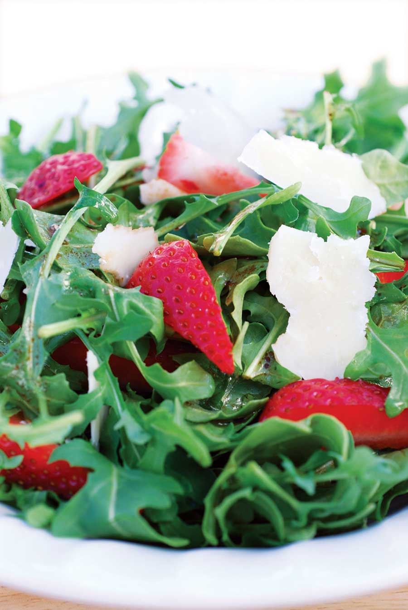

Ingredients:
4 cups baby arugula or other flavorful spring greens
1 cup strawberries, sliced
2 ounces Parmesan cheese, shaved (about 1/2 cup)
Salt and pepper, to taste
2 tbsp aged (richer) balsamic vinegar
1 tbsp extra virgin olive oil
Instructions:
Combine arugula, strawberries, cheese, salt and pepper in a salad bowl. Drizzle vinegar and oil over the salad. Toss gently and serve at once. For variety, add toasted hazelnuts or try goat cheese in place of Parmesan. Serves 2.
Check out these fresh seasonal strawberry recipes, too!
|
 ROGER DOIRON Vibrant green and red colors make this salad a feast for the eyes. |
|
|